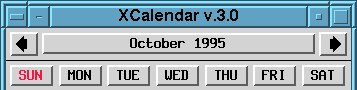
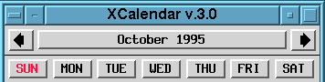
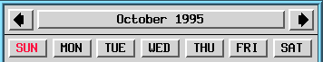
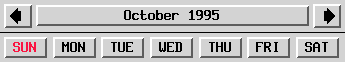

Below are some examples of what an application window might look like if you altered the Style entry for that application. You'll find a full discussion of the various Style options back at the LG main page. These are included to give you an idea of what things look like on the system that I'm using. I've used the very nice little program xcalendar as an example and simply altered the styles entry for this app. For those of you who might be interested, these images were created using xwd, convert (part of the ImageMagick suite of graphics programs), and xpaint.
Beneath each screen dump is a Styles entry that produced the particular
style.

Style xcalendar Title, HandleWidth 6
This is the default on my system: each window is given a titlebar which contains the window name and the titlebar buttons; handles, which allow resizing of the application window; and a borderwidth of 6 pixels. You'll notice that since I'm using handles that I set the width of the frame using the HandleWidth option.

Style xcalendar Title, HandleWidth 0
Setting the HandleWidth option to zero causes the border to disappear completely. If you use this setting, you may want to set the size of the application window on the command line using the "-geometry" option since you will not be able to resize the window because the handles are no longer visible.

Style xcalendar Title, HandleWidth 10
If you're really into nice, sturdy borders, then this is the option for you! Setting the HandleWidth to 10, as in this case, gives you plenty of screen real estate to manipulate those handles.

Style xcalendar Title, NoHandles, BorderWidth 6
In this case, using the NoHandles option disables the handles on the window frame. Once again, if you use this setting you will not be able to resize the window, so your best use of this is to set the size of the application on the command line or in a menu setting. This style works well for apps, such as the calendar pictured here, that you load up when you start X and leave alone. Also note that this is a case where you'd use the BorderWidth option instead of the HandleWidth option since you are using only a border and not a border + handles.

Style xcalendar NoTitle, NoHandles, BorderWidth 6
We're starting to get a bit minimalistic here... This style produces a window with no titlebar, titlebar buttons, or resize handles. Leaving a border around it does, however, make the application window easy to move.

Style xcalendar NoTitle, HandleWidth 0
This is about as bare-bones as you can get. With this style you can completely strip away all window decorations leaving only the window itself. Performing any kind of window operations such as move, resize, or close is a bit difficult and so you'll probably rarely use this except for apps such as an xclock or possibly an xbiff type window.
 Back to the October
Edition of the Linux Gazette
Back to the October
Edition of the Linux Gazette
This page written and maintained by: